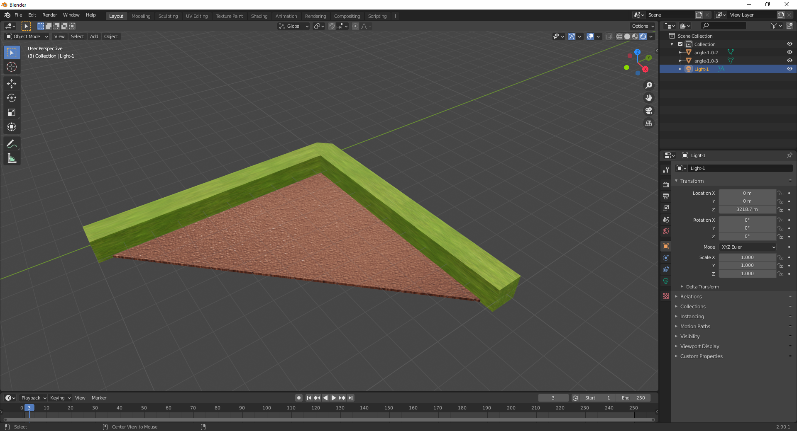
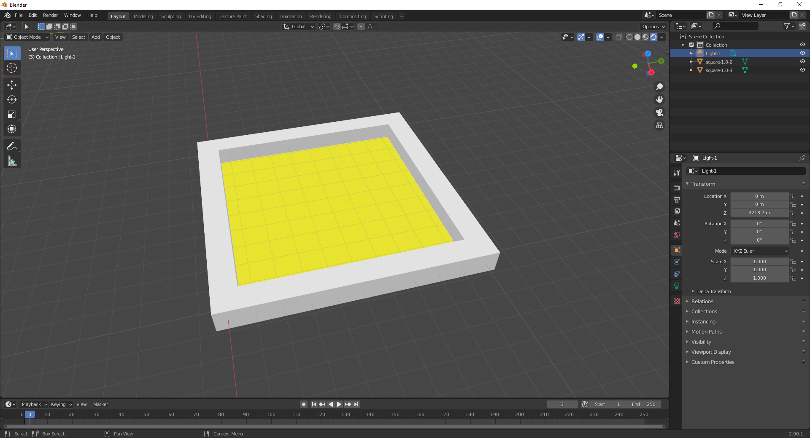
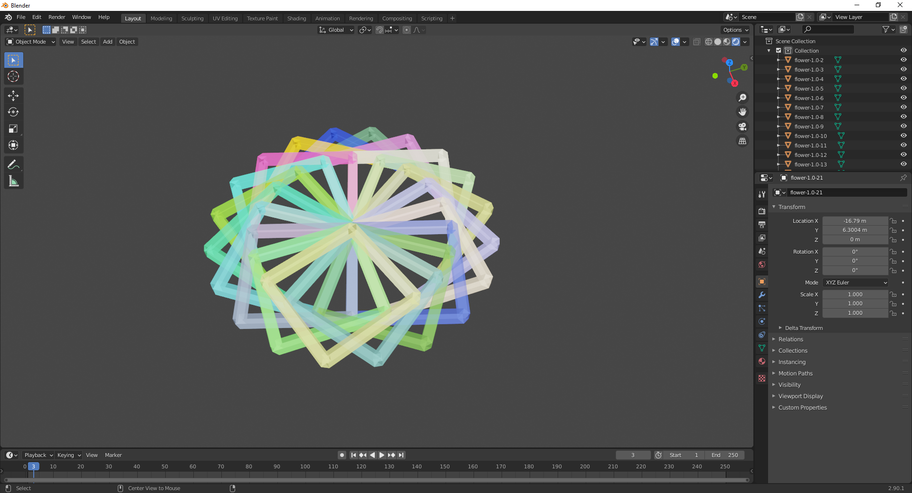
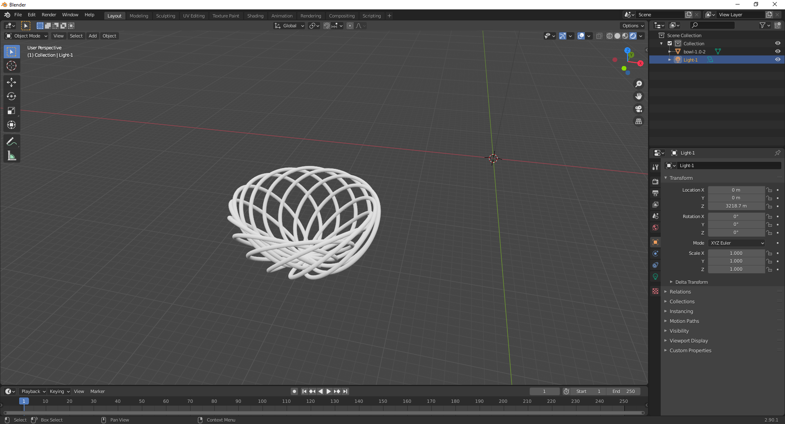
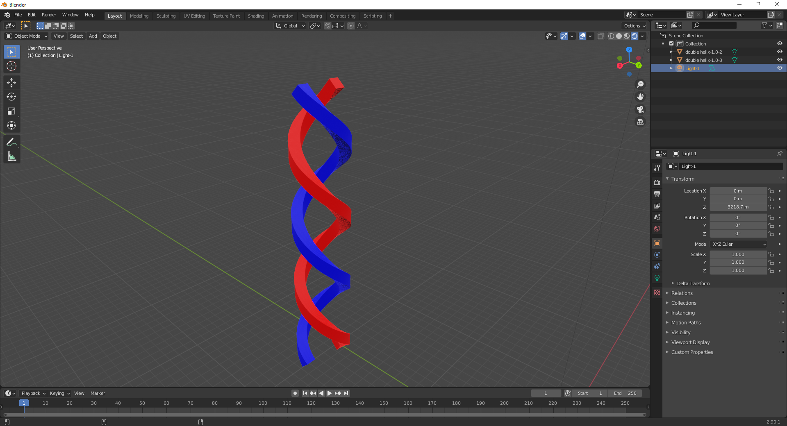
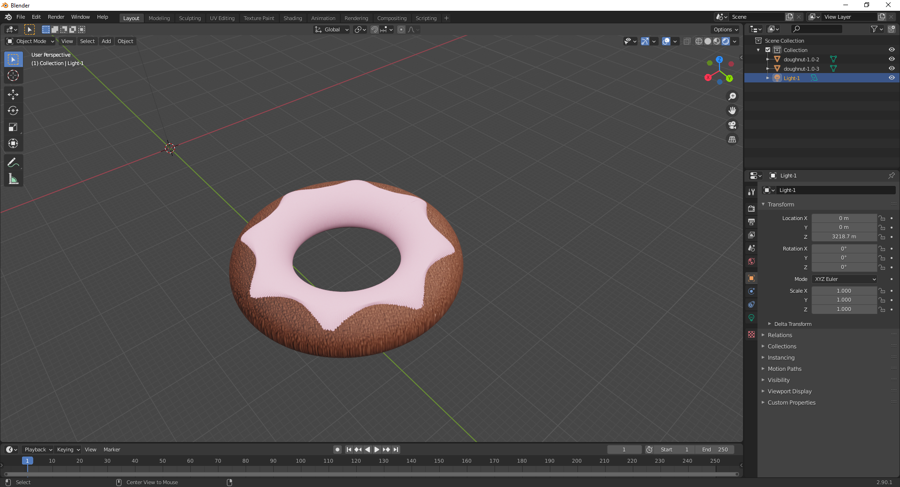
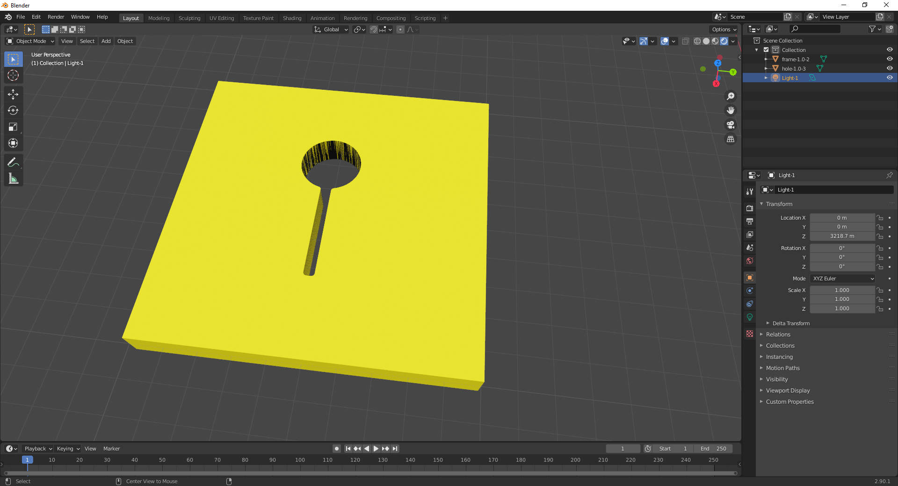

Examples¶
These are some simple examples
Filled Angle¶
Code:
turtle = Blogo("angle")
turtle.set_texture(grassTex)
turtle.fill_unwrap = True
turtle.fill(0, 0.1, brownTex)
turtle.fd(10)
turtle.rt(90)
turtle.fd(10)
Result:
Square¶
Code:
turtle = Blogo("square")
turtle.fill(0.1, 0.2, (1,0.8431,0,1))
for i in range(0, 4):
turtle.fd(side)
turtle.fd(0.5)
turtle.bk(0.5)
turtle.rt(90)
turtle.bk(0.5)
turtle.fd(0.5)
Result:
Flower¶
Code:
turtle = Blogo("flower")
for i in range(20):
turtle.set_texture((random.random(), random.random(), random.random(), 0.5))
turtle.square(10)
turtle.rt(18)
Result:
Bowl¶
Code:
turtle = Blogo("bowl")
turtle.set_cross_section("circle20", 0.2)
turtle.anticlockwise(135)
turtle.up(9)
for i in range(14):
turtle.circle(5)
turtle.rt(18)
turtle.up(18)
Result:
Double Helix¶
Code:
turtle = Blogo("double helix")
turtle.set_texture("red")
helix_code = "up 45; fd 0.1; dn 45; rt 2"
for i in range(0, 360):
turtle.parse(helix_code)
turtle.reset()
turtle.pen_up()
turtle.set_texture("blue")
turtle.rt(90)
turtle.fd(4)
turtle.rt(90)
turtle.pen_down()
for i in range(0, 360):
turtle.parse(helix_code)
Result:
Doughnut¶
Code:
turtle = Blogo("doughnut")
turtle.set_pos(start)
turtle.set_texture(brownTex)
turtle.set_z(5)
turtle.set_cross_section("circle", 5, 4)
turtle.set_unwrap(False)
for i in range(0, 361):
turtle.fd(0.25)
turtle.rt(1)
turtle.set_texture(pinkTex)
for i in range(0, 361):
turtle.set_width("right", 1.05)
mod = float(abs((i % (360/8)) - (360/16))) / (360/16)
mod *= math.pi
turtle.set_width("left", 0.5 - math.cos(mod)*0.4)
turtle.set_width("above", 1.1)
turtle.set_width("below", 0.9)
turtle.fd(0.25)
turtle.rt(1)
Result:
Keyhole¶
Code:
size = 10
h = 3.0
w = 0.25
r = 1.0
turtle = Blogo("frame")
turtle.set_texture((1,0.8431,0,1))
turtle.set_width("left", 0)
turtle.set_width("right", size*2)
turtle.fd(size)
frame_obj = turtle.get_objects()
turtle_hole = Blogo("hole")
turtle_hole.set_cross_section("square", 0.2)
turtle_hole.set_texture((0,0,0,1))
turtle_hole.fill(0, 1, (1,1,1,1))
turtle_hole.set_xy((size + (h+2*r)) / 2, size/2 - w)
turtle_hole.set_width("left", 0)
turtle_hole.set_width("right", 0)
turtle_hole.set_width("above", 5.1)
turtle_hole.set_width("below", 5.1)
turtle_hole.fd(w/2)
turtle_hole.arc(-90, 0.1)
turtle_hole.fd(h)
t = degrees(asin(w / r))
turtle_hole.arc(90 - t, 0.1)
turtle_hole.arc(2*t - 360, r)
turtle_hole.arc(90 - t, 0.1)
turtle_hole.fd(h)
turtle_hole.arc(-90, 0.1)
turtle_hole.fd(w/2)
hole_obj = turtle_hole.get_objects()
BlogoUtils.boolean_op(frame_obj, "minus", hole_obj[1])
Result:
